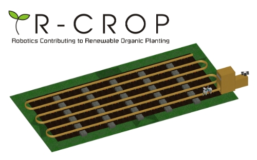
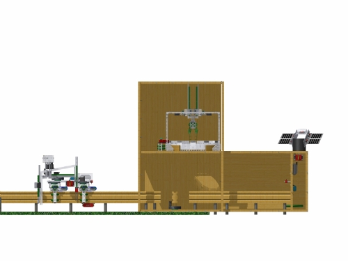

Much of the waste thrown in the trash today is usable through recycling or as compost. Instead, it is
filling up our landfills. Sorting of usable waste from trash is often inconvenient, and current methods
for transporting waste rely primarily on large, inefficient trucks using fossil fuels. The R-WARS
(Robotic Waste Recycling System) is a solution to these problems.
The Velodroom Bike Cooler keeps your drink cold using electricity generated by a dynamo on the rear wheel, or by a solar panel. It is attached to the existing mounting point for the water bottle holder.
R-CROP
R-CROPRobotics Contributing to Renewable Organic Planting
R-CROP Front ViewFront view of the mobile robot, seed changer, and charging garage that make up the R-CROP
R-CROP Back ViewBack view of the mobile robot, seed changer, and charging garage that make up the R-CROP
R-CROP Side ViewSide view of the mobile robot, seed changer, and charging garage that make up the R-CROP
R-CROP Top ViewTop view of the mobile robot, seed changer, and charging garage that make up the R-CROP
Sustainable Design ElementsOverview of the R-CROP’s sustainable design features
Key AssembliesMobile robot, seed changer, charging garage, and solar array
Seed ModuleDetail of the seed module’s design
Brainstorming SketchesA selection of our brainstorming sketches
Design ProcessImages illustrating parts of our design process, including sketching, prototyping, and finalizing the design
Part detail: CarouselImages illustrating the construction of the carousel
Home gardening is an important aspect of sustainability. By growing your own food,
you help eliminate the cost and energy usage involved in growing, packaging, and
shipping food. However, not everybody has the time to tend a garden daily, and
automatic devices, such as watering systems, are often inefficient and unable to adjust
to changes in the environment. The R-CROP (Robotics Contributing to Renewable Organic
Planting) was created to help you maintain a successful and efficient garden almost
effortlessly.
Trench Warfare is played on a 12' by 12' field covered in foam tiles. A 3" deep trench
separates the field, and supports the three scoring channels. The scoring object is a
3" cube with two open faces. 56 of these cubes are distributed throughout the field. A
cube scored in the trench is worth 1 point, a cube scored in one of the low channels is
worth 2 points, and a cube scored in the high channel is worth 3 points. Two alliances
of two robots each start on opposite sides of the field. Each match consists of a 20 second autonomous period,
followed by a 2 minute driver control period. During the match, alliances attempt to score more points
than their opponent. The alliance who scores the most points during the autonomous
period gets a 5 point bonus. Robots can earn an additional three points by finishing the
match on the opponent's side of the trench.